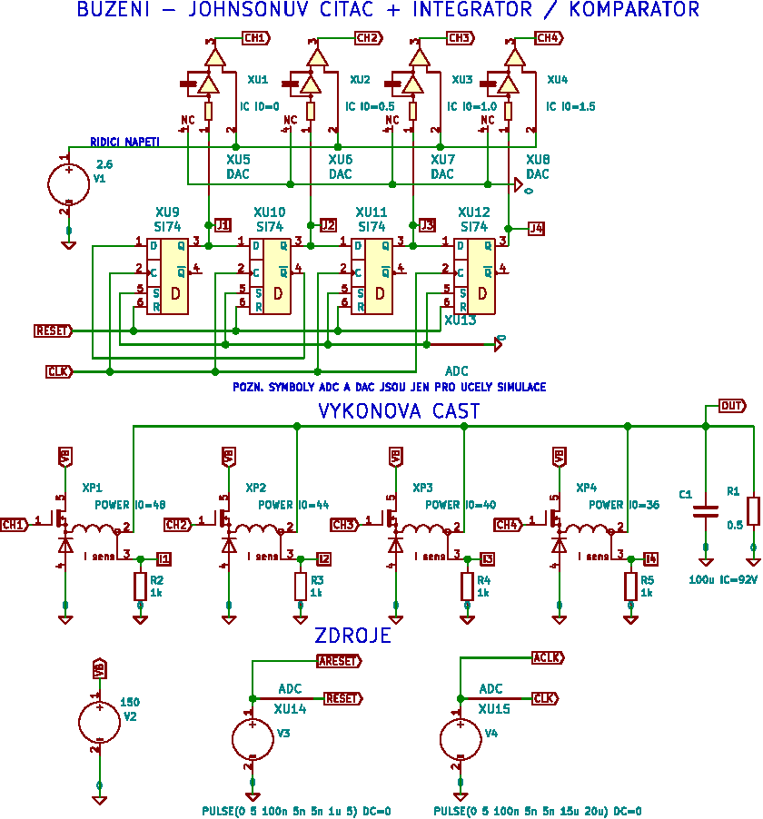
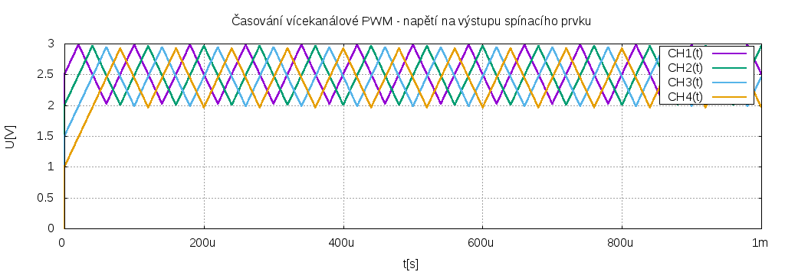
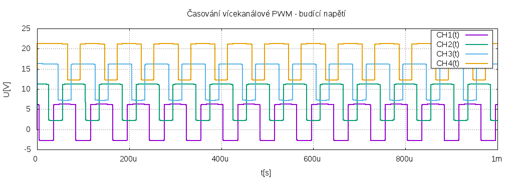
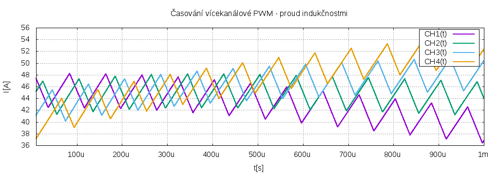
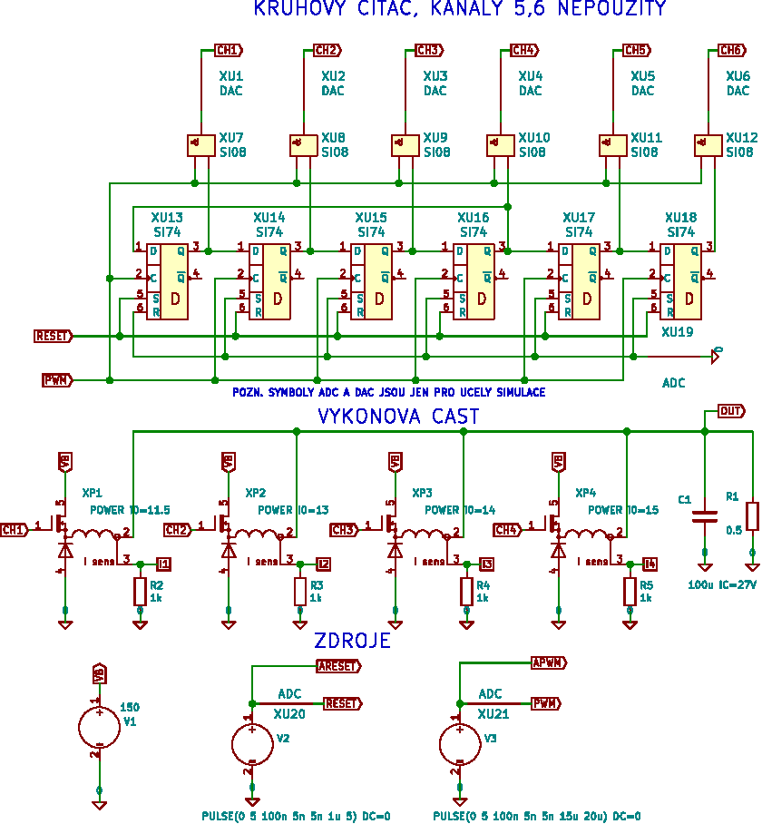
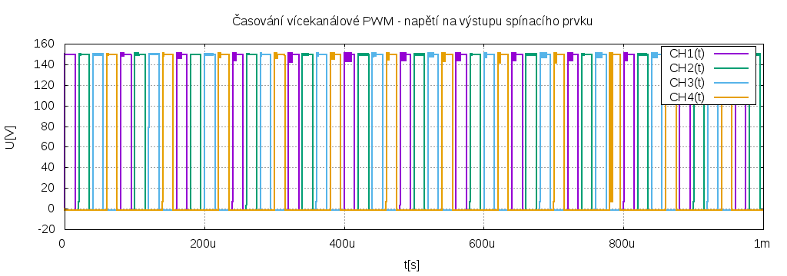
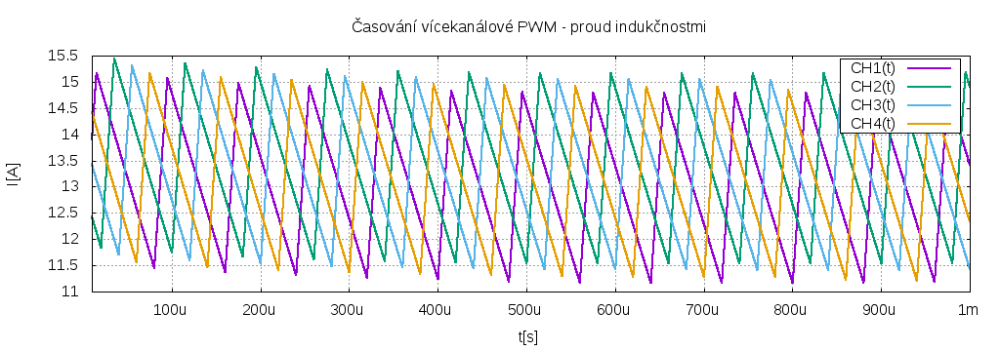
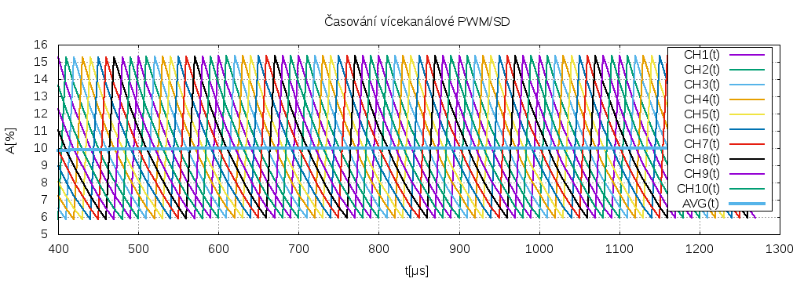
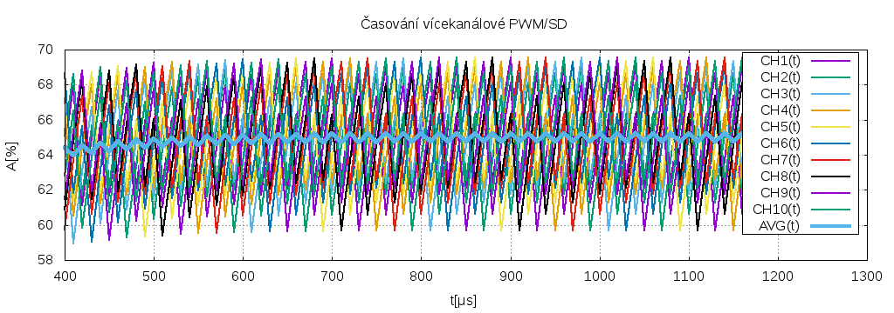

Pokud má snižující měnič požadavek na velký poměr vstupního a výstupního napětí, pak jsou kladeny vysoké požadavky na spínací a akumulační prvky. Tranzistory (MOSFET, IGBT) musí snést vysoké vstupní napětí a v sepnutém stavu jimi teče velký proud, větší než výstupní. Akumulační indukčností teče také velký proud, musí být vinuta tlustým drátem. Pokud je poměr napětí opravdu velký, je lépe použít transformátor - na vstupu je sice velké napětí, ale malý proud, je tedy možné vybrat levnější tranzistory a primární vinutí může být vinuto slabším drátem. Tlustý drát je jen na sekundáru. Pokud je nutné použít řízený usměrňovač, stačí na něj tranzistory s malým napětím a velkým proudem.
Další možnost je rozhodit spínání do více kanálů. Je to podobné jako by výkonové prvky byly zapojeny paralelně, jen spínače pracují s vhodným časovým posuvem, což vlastnosti zapojení ještě o něco zlepšuje. Omezí se proudové nárazy a tím i rušení a nároky na fitrační kondenzátory.
Lze to zkusit udělat po staru, s pár integrovanými obvody. Schema pro simulaci v ngspice je zde:
Nakreslen je jen nástin, pro 4 kanály je Johnsonův čítač upraven tak, aby vždy dva sousední kanály byly v log. H a dva ostatní v log. L. Integrací takového signálu dostaneme trojúhelníková napětí zhruba takto:
Komparací s řídícím napětím dostaneme buzení pro jednotlivé kanály (napětí v grafu je pro přehlednost posunuto vždy o 5V)
Protože byla zvolena poměrně velká střída (činitel plnění), časy sepnutí se překrývají a výstupní napětí není v poměru ke vstupnímu zase tak malé. Při napájení 150V je na výstupu cca 91V, zátěží pak teče 180A. Jak k tomu přispívají jednotlivé indukčnosti je vidět zde
Je vidět, že proudy se časem rozcházejí. V simulaci je to způsobeno tím, že je obtížné stanovit přesně počáteční podmínky, v reálném obvodu by to byl stejný problém, protože analogové části nebudou nikdy totožné. Asi by to člo řešit zápornou zpětnou vazbou - podle proudu indukčností řídit integrátor / komparátor, ale tohle stejně není pro praktickou realizaci moc vhodné.
Výkonová část je pouze naznačena, v simulaci je to samostatný obvod, MOSFET je buzen poměrně korektně řízeným zdrojem. Obvod je pak použit i v následující simulaci.
Pokud máme pulsně šířkovou modulaci (PWM) vygenerovanou již předem, např. mikroprocesorem, lze zkusit rozházet jí do jednotlivých kanálů třeba tímto jednoduchým obvodem:
Zde se PWM použije jako hodiny pro čítač, který má log. H jen na jednom výstupu z N, na ostatních je log. L, to celé se motá do kruhu jako v předchozím případu. Pokud výstupy z čítače logicky vynásobíme se vstupní PWM, máme hotové buzení pro jednotlivé kanály. Má to samozřejmě svá omezení. Výstupní napětí může dosáhnout nejvýše 1/N-tou částí vstupního. Což pro tento typ měniče nemusí být zase tak moc limitující. Buzení a tím i výstup z výkonové části vypadá pak takto:
Je zřejmé, že časy sepnutí jednotlivých kanálů se nepřekrývají. Ale i tak dobře funguje fitrace výstupu rozprostřením spínání kanálů v čase. I proudy akumulačními cívkami jsou rozumné:
Výstupní napětí při napájení 150V a činiteli plnění 0.75 by mělo být 0.75 * 150/4 = 28V, proud zátěží pak 56A. Celkem to odpovídá (jsou tam samozřejmě nějaké ztráty při spínání):

Pokud se podíváme na předchozí obrázek, je vidět na výstupu sice malé, ale přece, zvlnění. Je tedy opravdu nutné generovat PWM s vysokým rozlišením ? Dnes sice máme procesory, které umí na použitých 100kHz udělat rozlišení 256 až 1024 bitů (časovače jsou taktovány desítky MHz). Můžeme to zkusit dotáhnout ad absurdum a použít rozlišení jen 1 bit. Pak budeme mít vlastně v jednotlivých kanálech ΣΔ (sigma / delta) modulaci.
Pokud máme např. 10 kanálů a činitel plnění 0.1 pak by buzení vypadalo takto
Vstup = 6554 (10%)
Originální SIGMA-DELTA: [data - desítky / jednotky pod sebou]
[ ]
[11111111111111111111111111111111111111111111111111111111111111111111111111111111111111111111111111111111111111111111111111111111]
Jednotlivé kanály: [data][počet 1]
[█▁▁▁▁▁▁▁▁▁█▁▁▁▁▁▁▁▁▁█▁▁▁▁▁▁▁▁▁█▁▁▁▁▁▁▁▁▁█▁▁▁▁▁▁▁▁▁█▁▁▁▁▁▁▁▁▁█▁▁▁▁▁▁▁▁▁█▁▁▁▁▁▁▁▁▁█▁▁▁▁▁▁▁▁▁█▁▁▁▁▁▁▁▁▁█▁▁▁▁▁▁▁▁▁█▁▁▁▁▁▁▁▁▁█▁▁▁▁▁▁▁][013]
[▁█▁▁▁▁▁▁▁▁▁█▁▁▁▁▁▁▁▁▁█▁▁▁▁▁▁▁▁▁█▁▁▁▁▁▁▁▁▁█▁▁▁▁▁▁▁▁▁█▁▁▁▁▁▁▁▁▁█▁▁▁▁▁▁▁▁▁█▁▁▁▁▁▁▁▁▁█▁▁▁▁▁▁▁▁▁█▁▁▁▁▁▁▁▁▁█▁▁▁▁▁▁▁▁▁█▁▁▁▁▁▁▁▁▁█▁▁▁▁▁▁][013]
[▁▁█▁▁▁▁▁▁▁▁▁█▁▁▁▁▁▁▁▁▁█▁▁▁▁▁▁▁▁▁█▁▁▁▁▁▁▁▁▁█▁▁▁▁▁▁▁▁▁█▁▁▁▁▁▁▁▁▁█▁▁▁▁▁▁▁▁▁█▁▁▁▁▁▁▁▁▁█▁▁▁▁▁▁▁▁▁█▁▁▁▁▁▁▁▁▁█▁▁▁▁▁▁▁▁▁█▁▁▁▁▁▁▁▁▁█▁▁▁▁▁][013]
[▁▁▁█▁▁▁▁▁▁▁▁▁█▁▁▁▁▁▁▁▁▁█▁▁▁▁▁▁▁▁▁█▁▁▁▁▁▁▁▁▁█▁▁▁▁▁▁▁▁▁█▁▁▁▁▁▁▁▁▁█▁▁▁▁▁▁▁▁▁█▁▁▁▁▁▁▁▁▁█▁▁▁▁▁▁▁▁▁█▁▁▁▁▁▁▁▁▁█▁▁▁▁▁▁▁▁▁█▁▁▁▁▁▁▁▁▁█▁▁▁▁][013]
[▁▁▁▁█▁▁▁▁▁▁▁▁▁█▁▁▁▁▁▁▁▁▁█▁▁▁▁▁▁▁▁▁█▁▁▁▁▁▁▁▁▁█▁▁▁▁▁▁▁▁▁█▁▁▁▁▁▁▁▁▁█▁▁▁▁▁▁▁▁▁█▁▁▁▁▁▁▁▁▁█▁▁▁▁▁▁▁▁▁█▁▁▁▁▁▁▁▁▁█▁▁▁▁▁▁▁▁▁█▁▁▁▁▁▁▁▁▁█▁▁▁][013]
[▁▁▁▁▁█▁▁▁▁▁▁▁▁▁█▁▁▁▁▁▁▁▁▁█▁▁▁▁▁▁▁▁▁█▁▁▁▁▁▁▁▁▁█▁▁▁▁▁▁▁▁▁█▁▁▁▁▁▁▁▁▁█▁▁▁▁▁▁▁▁▁█▁▁▁▁▁▁▁▁▁█▁▁▁▁▁▁▁▁▁█▁▁▁▁▁▁▁▁▁█▁▁▁▁▁▁▁▁▁█▁▁▁▁▁▁▁▁▁█▁▁][013]
[▁▁▁▁▁▁█▁▁▁▁▁▁▁▁▁█▁▁▁▁▁▁▁▁▁█▁▁▁▁▁▁▁▁▁█▁▁▁▁▁▁▁▁▁█▁▁▁▁▁▁▁▁▁█▁▁▁▁▁▁▁▁▁█▁▁▁▁▁▁▁▁▁█▁▁▁▁▁▁▁▁▁█▁▁▁▁▁▁▁▁▁█▁▁▁▁▁▁▁▁▁█▁▁▁▁▁▁▁▁▁█▁▁▁▁▁▁▁▁▁█▁][013]
[▁▁▁▁▁▁▁█▁▁▁▁▁▁▁▁▁█▁▁▁▁▁▁▁▁▁█▁▁▁▁▁▁▁▁▁█▁▁▁▁▁▁▁▁▁█▁▁▁▁▁▁▁▁▁█▁▁▁▁▁▁▁▁▁█▁▁▁▁▁▁▁▁▁█▁▁▁▁▁▁▁▁▁█▁▁▁▁▁▁▁▁▁█▁▁▁▁▁▁▁▁▁█▁▁▁▁▁▁▁▁▁█▁▁▁▁▁▁▁▁▁█][013]
[▁▁▁▁▁▁▁▁█▁▁▁▁▁▁▁▁▁█▁▁▁▁▁▁▁▁▁█▁▁▁▁▁▁▁▁▁█▁▁▁▁▁▁▁▁▁█▁▁▁▁▁▁▁▁▁█▁▁▁▁▁▁▁▁▁█▁▁▁▁▁▁▁▁▁█▁▁▁▁▁▁▁▁▁█▁▁▁▁▁▁▁▁▁█▁▁▁▁▁▁▁▁▁█▁▁▁▁▁▁▁▁▁█▁▁▁▁▁▁▁▁▁][012]
[▁▁▁▁▁▁▁▁▁█▁▁▁▁▁▁▁▁▁█▁▁▁▁▁▁▁▁▁█▁▁▁▁▁▁▁▁▁█▁▁▁▁▁▁▁▁▁█▁▁▁▁▁▁▁▁▁█▁▁▁▁▁▁▁▁▁█▁▁▁▁▁▁▁▁▁█▁▁▁▁▁▁▁▁▁█▁▁▁▁▁▁▁▁▁█▁▁▁▁▁▁▁▁▁█▁▁▁▁▁▁▁▁▁█▁▁▁▁▁▁▁▁][012]
A proudy akumulačními cívkami zhruba takto
Je to poněkud idealizováno, není to pravá simulace, jednotlivé kanály jsou jen klouzavé průměry s postupným zapomínáním ze vstupních hodnot kanálů {0,1}, to co je označeno AVG je součet těchto průměrů dělený počtem kanálů (10) a odpovídá tomu, jak by skutečně vypadal výstup. Parametry byly zvoleny tak, aby to hezky vypadalo, plnění 0.1 při 10 kanálech je nejvyšší hodnota činitele plnění, kdy se ještě sepnutí kanálů v čase nepřekrývá. Pokud zvolíme plnění např. 0.65, pak už to tak hezky nevypadá.
Vstup = 42598 (65%)
Originální SIGMA-DELTA: [data - desítky / jednotky pod sebou]
[ ]
[66767676767676767676767676767676767676767676767676767676767676767676767676767676767676767676767676767676767676767676767676767676]
Jednotlivé kanály: [data][počet 1]
[██▁██▁██▁██▁█▁██▁██▁██▁██▁██▁██▁█▁██▁██▁██▁██▁██▁██▁█▁██▁██▁██▁██▁██▁██▁█▁██▁██▁██▁██▁██▁██▁█▁██▁██▁██▁██▁██▁██▁█▁██▁██▁██▁██▁██][084]
[██▁██▁█▁██▁██▁██▁██▁██▁██▁█▁██▁██▁██▁██▁██▁██▁█▁██▁██▁██▁██▁██▁██▁█▁██▁██▁██▁██▁██▁██▁█▁██▁██▁██▁██▁██▁██▁█▁██▁██▁██▁██▁██▁██▁█▁][083]
[█▁██▁██▁██▁██▁██▁██▁█▁██▁██▁██▁██▁██▁██▁█▁██▁██▁██▁██▁██▁██▁█▁██▁██▁██▁██▁██▁██▁█▁██▁██▁██▁██▁██▁██▁█▁██▁██▁██▁██▁██▁██▁█▁██▁██▁][083]
[█▁██▁██▁██▁██▁█▁██▁██▁██▁██▁██▁██▁█▁██▁██▁██▁██▁██▁██▁█▁██▁██▁██▁██▁██▁██▁█▁██▁██▁██▁██▁██▁██▁█▁██▁██▁██▁██▁██▁██▁█▁██▁██▁██▁██▁][083]
[█▁██▁██▁█▁██▁██▁██▁██▁██▁██▁█▁██▁██▁██▁██▁██▁██▁█▁██▁██▁██▁██▁██▁██▁█▁██▁██▁██▁██▁██▁██▁█▁██▁██▁██▁██▁██▁██▁█▁██▁██▁██▁██▁██▁██▁][083]
[█▁█▁██▁██▁██▁██▁██▁██▁█▁██▁██▁██▁██▁██▁██▁█▁██▁██▁██▁██▁██▁██▁█▁██▁██▁██▁██▁██▁██▁█▁██▁██▁██▁██▁██▁██▁█▁██▁██▁██▁██▁██▁██▁█▁██▁█][083]
[▁██▁██▁██▁██▁██▁█▁██▁██▁██▁██▁██▁██▁█▁██▁██▁██▁██▁██▁██▁█▁██▁██▁██▁██▁██▁██▁█▁██▁██▁██▁██▁██▁██▁█▁██▁██▁██▁██▁██▁██▁█▁██▁██▁██▁█][083]
[▁██▁██▁██▁█▁██▁██▁██▁██▁██▁██▁█▁██▁██▁██▁██▁██▁██▁█▁██▁██▁██▁██▁██▁██▁█▁██▁██▁██▁██▁██▁██▁█▁██▁██▁██▁██▁██▁██▁█▁██▁██▁██▁██▁██▁█][083]
[▁██▁█▁██▁██▁██▁██▁██▁██▁█▁██▁██▁██▁██▁██▁██▁█▁██▁██▁██▁██▁██▁██▁█▁██▁██▁██▁██▁██▁██▁█▁██▁██▁██▁██▁██▁██▁█▁██▁██▁██▁██▁██▁██▁█▁██][083]
[▁█▁██▁██▁██▁██▁██▁█▁██▁██▁██▁██▁██▁██▁█▁██▁██▁██▁██▁██▁██▁█▁██▁██▁██▁██▁██▁██▁█▁██▁██▁██▁██▁██▁██▁█▁██▁██▁██▁██▁██▁██▁█▁██▁██▁██][083]

Nicméně pořád je patrná docela dobrá filtrace. Pokud by někdo chtěl vědět, jak to funguje, je to docela dost zřejmé ze zdrojáků, soubor pwm.cpp.
K tomu jen pár poznámek. Není možné počítat ΣΔ zvlášť pro každý kanál, musí tam být definovaný časový posun. Takže je nutné napřed spočítat číslo v rozsahu <0,N> (N je počet kanálů) metodou podobnou jako se počítá ΣΔ, toto číslo pak udává počet log. H pro buzení jednotlivých kanálů. Pak je samozřejmě otázkou, jak tyto jednotky rozsekat do jednotlivých kanálů tak, aby se to v čase co nejrovmoměrněji rozprostřelo. Původní metoda v main.cpp , počítala pro každý kanál klouzavý průměr s postupným zapomínáním. Jednotky pak postupně ukládala tam, kde byl tento průměr nejmenší. To je přesně to, co je potřeba. Je to ale hodně neefektivní. Ukázalo se, že ty log. H se nerozmisťují nějakým divokým způsobem, není toho zapotřebí, zůstávají fakticky "pohromadě", jak je vidět i z předchozích obrázků. Potom to jde hodně zjednodušit na pouhé rotace skupiny log. H. Celé to jde předpočítat do tabulky skriptem pwm.py. Protože je to fakt jen pár rotací a logických operací, byl by možná run time výpočet efektivnější než sahat do tabulky, ale zatím jsem to nezkoumal, z tabulky je lépe vidět, co se tam děje. V každém případě by to měl moderní 32. bitový mikroprocesor zvládnout počítat v reálném čase pro těch cca 100kHz, je to pár jednoduchých operací.
Vícefázová ΣΔ není můj vynález, něco málo jsem našel na webu, ale implementované do FPGA, dokonce tam byl kód ve VHDL, s podobným algoritmem. To, že se tím někdo zabývá naznačuje, že princip je zřejmě správný, ale bude samozřejmě hodně záležet na detailech. Mělo by to spojovat výhody ΣΔ, tedy jednoduchost a přesnost s výhodami vícefázové PWM, což je zmenšení rušení a nároků na spínací a akumulační prvky. A nemá to omezení na rozsah výstupního napětí. Dávám to celé na web (zdrojáky pod licencí MIT), kdyby někdy došlo na to udělat si vlastní měnič třeba pro solár. Patrně k tomu stejně nedojde, s takto výkonnými obvody mi chybí zkušenosti a dovedu si představit, že získat je by bylo mnohem dražší než koupit to hotové. Ale zase jsem se něco naučil, na vícefázové měniče jsem dosud nenarazil.
Pokud by si s tím chtěl někdo hrát bude k tomu potřebovat
Což kromě ngspice obvykle v Linuxu bývá.